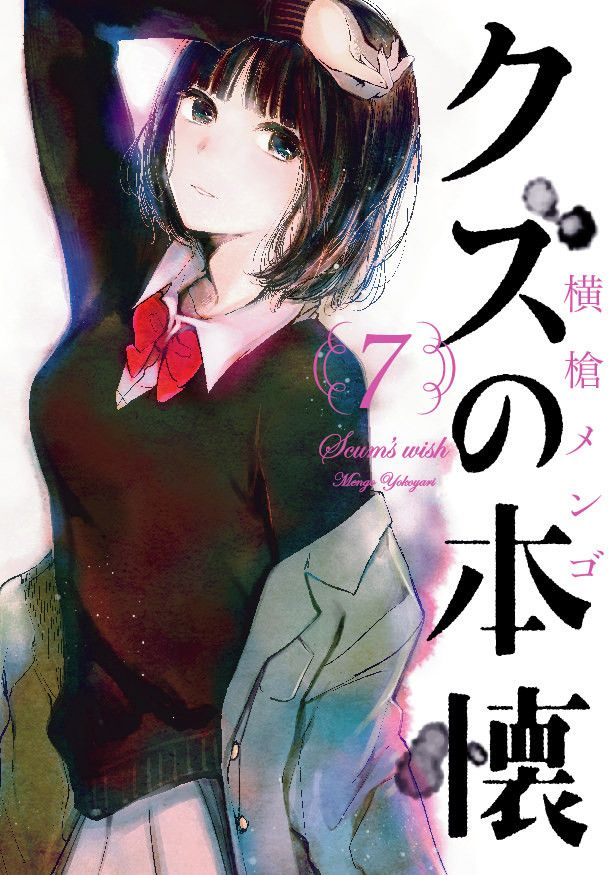

TE RECOMENDAMOS
Parasyte
Ficha y sinopsis
Título: Parasyte (Kiseijuu: Sei no Kakuritsu)
Género: Acción, Ciencia Ficción, Horror, Psicológico, Drama
Demografía: Seinen
Capítulos: 24
Estudio: Madhouse
Año de emisión: 2014 – 2015
De manera repentina llegaron a la Tierra unos alienígenas parásitos para infiltrarse entre toda la humanidad adentrándose en el cuerpo de los humanos con el objetivo de llegar hasta el cerebro de los cuerpos para hacerse con el completo control de ellos. Los parásitos que se han apoderado de cuerpos humanos tienen la capacidad de cambiar su forma con el fin de engañar a otros humanos que aún no han sido controlados por un parásito y devorarlos. Shinichi Izumi es un estudiante de 16 años que ha sido víctima de uno de los parásitos pero éste falló en el momento de hacerse con el control del cerebro del protagonista y únicamente es capaz de controlar su brazo derecho. Este parásito, llamado Migi, no tiene otra opción más que confiar en Shinichi para mantenerse vivo y ambos deberán cooperar y coexistir juntos para sobrevivir, enfrentándose también a todos aquellos parásitos con intenciones hostiles que quieren demostrar que su raza es superior a la raza humana.
Ver Parasyte
Ver Portada
Kimi no na wa
Ficha y sinopsis
Título: Kimi no na wa
Género: Drama, Ciencia ficción, Romance
Duración Makoto Shinkai
Estudio: CoMix Wave Films
Año de emisión: 2016
Mitsuha es una joven estudiante que odia la vida rural que comparte junto a su padre, su abuela y su hermana, y sueña con la emocionante vida de la gran ciudad de Tokyo. Por eso pide el deseo de conocer a un chico guapo de Tokyo. Por otro lado, Taki es un joven estudiante de Tokyo que además pasa parte de su tiempo ocupado con su trabajo a tiempo parcial. Una noche, Mitsuha sueña que es un chico que vive en la gran ciudad mientras que Taki tiene al mismo tiempo un sueño en el que se convierte en una chica que vive en un pueblo. Ambos se dan cuenta de que han sufrido un intercambio de cuerpos y se comunican por medio de notas. ¿A que se deberá el repentino cambio en las vidas de Mitsuha y Taki, dos jóvenes desconocidos que se buscan el uno al otro desesperadamente?
Ver Kimi no na wa
Ver Portada
Kuzu no Honkai
Ficha y sinopsis
Título: Kuzu no Honkai
Género: Drama, Romance, Escolar
Demografia: Seinen
Capítulos: 12
Estudio: Lerche
Año de emisión: 2017
Frente al resto del mundo, Hanabi Yasuraoka y Mugi Awaya son la pareja perfecta pero en realidad ellos esconden el mismo secreto: están enamorados de dos personas con las que no pueden estar, sus profesores. Kuzu no Honkai habla sobre el amor y las relaciones que surgen al encontrarse frente a un amor correspondido, además del dolor que algunas personas pueden causar al tomar decisiones.
Ver Kuzu no Honkai
Ver Portada

Maquia, una historia de amor inmortal
Ficha y sinopsis
Título: Maquia, una historia de amor inmortal
Género: Drama, Fantasía
Duracion : 115 minutos
Estudio: P.A Works
Año de emisión: 2018
Maquia forma parte de un clan de gente inmortal que se dedica a tejer su día a día. El clan Iorph vive de manera pacífica pero Maquia se siente sola. Sin embargo, todo cambia cuando la tierra donde vive es atacada por un ejército enviado para buscar el secreto de la inmortalidad. Así, Maquia conoce a Ariel, un pequeño que se ha quedado sin padres, y entre los dos se irá desarrollando una relación entre una persona que no envejece y otra que sí lo hace.
Ver Maquia
Ver Portada